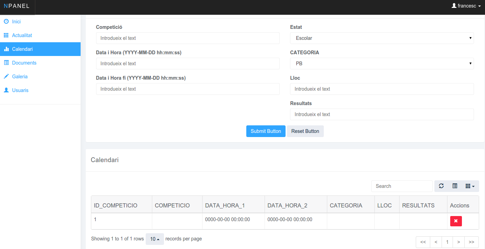

Per crear una competicio tenim de plenar totes les dades que tenim ens els següent camps 2 Camps de text que serien el nom de la competició i el lloc
Despres tenim Data i Hora Inici i Data i Hora Fi aquests 2 camps son Datepickers que significa aixó. Quan seleccionarem aquests camps sortira un selector amb els dies de l'any i hores
Per ultim tenim els selectors per seleccionar la categoria i l'estat en el qual competiran
Despres tenim la taula amb varies opcions que són les següents
- Refrescar la taula (Per si tenim dades noves)
- Amagar tots els noms de les taules
- Amagar solament alguna columna
- Buscar registres
- Paginador
- Mostrar 10, 25, 50 o 100 registres
Despres Pases al interior de la taula a la columna Accions on estan ubicades 2 opcions importants Modificar i Eliminar
- Botonet Tarronja = Modifcar
- Al fer click ens portarà a una altra pàgina que solament mostrara les dades d'aquella competicio per poder-les modificar i guardar altre cop
- Botonet Roig = Eliminar
- Al fer click al boto d'eliminar ens mostrara un avis conforme si volem eliminar aquella competicio o no
- Per ultim tindrem un boto verd per insertar els resultats un cop estiguen disponibles mitjançant un petit formulari
